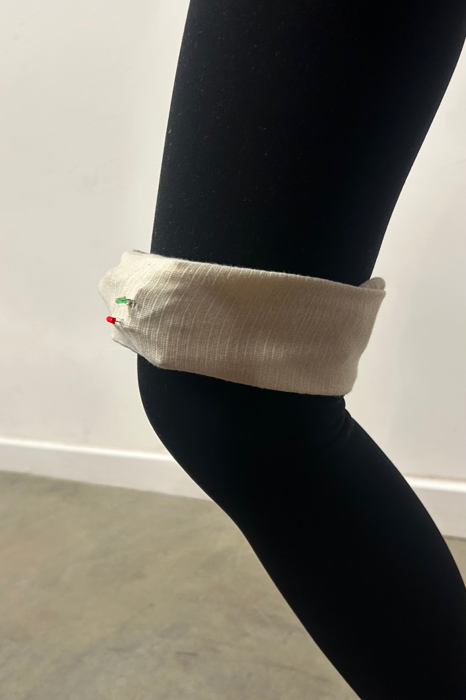
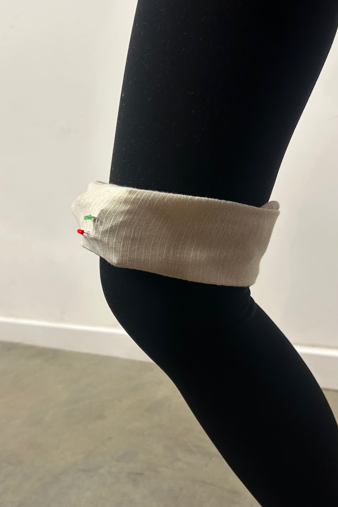
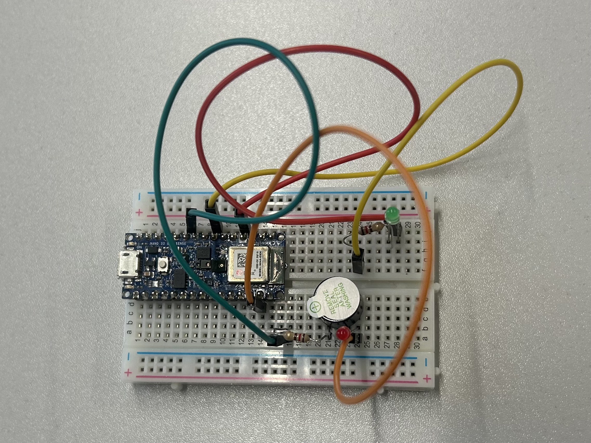
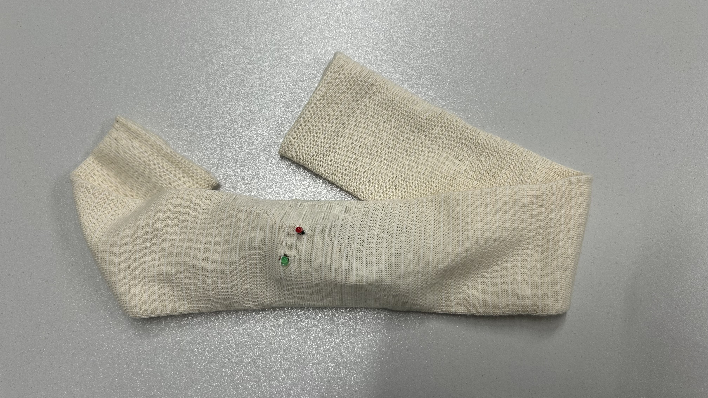

PosturaFit is a wearable device aimed at improving knee injury rehabilitation through posture monitoring and correction. The device utilises sensor systems (gyroscopes and accelerometers) integrated with machine learning to analyse real-time movement data and determine if the user's knee posture is correct or incorrect. The system provides non-intrusive feedback through visual (LED) and haptic (vibration) cues, enabling users to maintain proper posture without disruption during their daily activities or rehabilitation exercises.
Research in biomechanics and rehabilitation technology highlights the critical role of posture in the recovery process, particularly after knee injuries. Maintaining correct alignment is essential to prevent further strain or injury. Existing solutions often rely on external monitoring tools that can be cumbersome or distracting, which can hinder patient compliance. This project addresses these limitations by combining wearable technology with real-time, automated feedback to create a seamless rehabilitation experience.
The device leverages bioengineering principles to integrate sensor systems and real-time machine learning analysis into a compact, easy-to-use format. This approach reflects a growing trend in assistive technology, aiming to empower individuals in their recovery process while reducing reliance on external medical supervision.